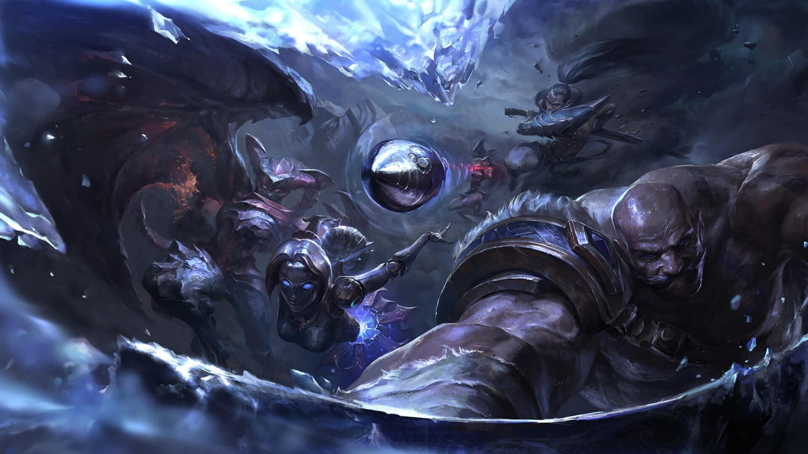
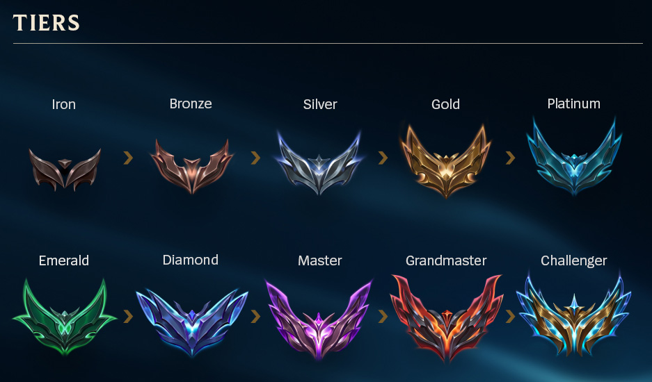

League of Legends Ranks/Tiers

Overview
League of Legends is one of the most popular online games. About 150 Millione people are playing League of Legendswhich goes to show that even though the game is over 10-years old, it is still quite popular - it also shows that new players are making accounts and joining.
So, for new players wanting to get better at League of Legends, there are quite a few terms that might seem new to them, one of which is all the talk about LoL ranks. What is the ranking system that Riot Games created in League of Legends and how do you even climb between the different tiers in League of Legends - also known as elo hell? That's what we're going to be exploring today.
LoL Ranks: What is League of Legends "Ranked"?
Ranked refers to the LoL ranking system. It's one of the few game modes available in League of Legends. There are different game modes in League of Legends, like ARAM, normals and ranked. Players who reach level 30 in League of Legends unlock ranked mode where they are able to earn LP through ranked games. Players who choose to play normal games or ARAM won't have their LoL ranks affected.
What Ranks Exist in League of Legends?
There are ten ranks that currently exist in League of Legends. Each rank is represented by a specific name, border and icon. This way LoL players are able to differentiate their skill level with ease since those in the same rank and tier should have similar proficiency in LoL.
There are ten ranks that currently exist in League of Legends. Each rank is represented by a specific name, border and icon. This way LoL players are able to differentiate their skill level with ease since those in the same rank and tier should have similar proficiency in LoL.
- Iron
- Bronze
- Silver
- Gold
- Platinum
- Emerald
- Diamond
- Master
- Grandmaster
- Challenger

How Do Ranks In League of Legends Work?
As we mentioned above, there are ten tiers in League of Legends. Each LoL tier is divided up into four divisions - each division being represented by a roman numeral IV to I.
Players are able to achieve any rank once they hit level 30. This means, you must first play a solid number of games wherein you acquire enough game knowledge before being allowed to play games on the ranked ladder.
But how do you move between the ranks and divisions in League of Legends? Well, as of Season 11 Riot Games made some changes to the way to move between divisions. Players don't have to win 3 out of 5 games anymore to move between divisions. This means players have a higher chance to rank up, but also a higher chance to rank down as well.
Moving between tiers has been adjusted at the start of the 2023 League of Legends season. While before players had to play a best-of-five series, they'll now only need to play a best-of-three.